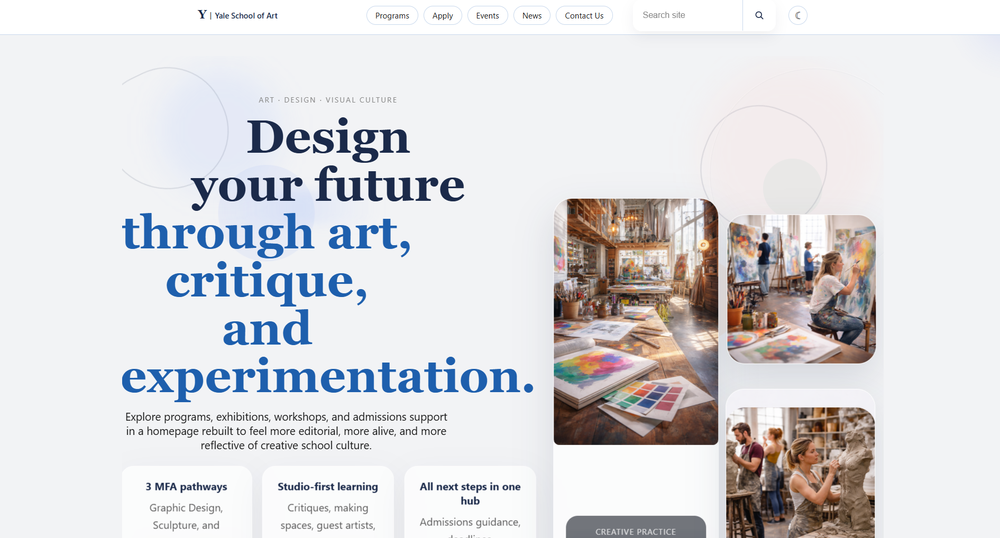

Project Summary
This project focused on redesigning the Yale School of Art website. The original site had a chaotic layout, inconsistent visual style, and confusing navigation. Our goal was to make the website feel cleaner, easier to use, and more professional while still keeping an artistic and creative identity.
View Full Case StudyProblem
The original Yale School of Art website was difficult to navigate because the page structure, colors, spacing, and typography felt inconsistent. Important information was hard to find quickly, which created a poor user experience for students, applicants, and visitors.
Target Audience
Prospective Students
Users looking for admissions, program details, and school information.
Current Students
Students trying to find updates, resources, events, and department information.
General Visitors
People exploring the school, its work, and its creative identity.
Main Goals
- Improve navigation and make important pages easier to find
- Create a cleaner and more organized layout
- Improve readability with better spacing and typography
- Keep the website creative without making it feel messy
- Make the design feel more modern and usable
Design Direction
The redesign focused on using clearer sections, stronger visual hierarchy, cleaner spacing, and a more intentional layout. Instead of overwhelming users with too much visual noise, the new design organizes content in a way that is easier to scan and understand.

Final Outcome
The final redesign makes the Yale School of Art website easier to use while still keeping a creative feel. Users can understand the purpose of the site faster, move through pages more easily, and find important information without feeling overwhelmed.
